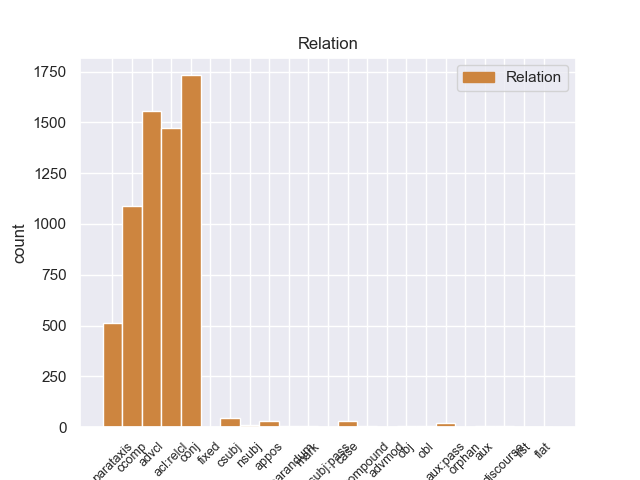
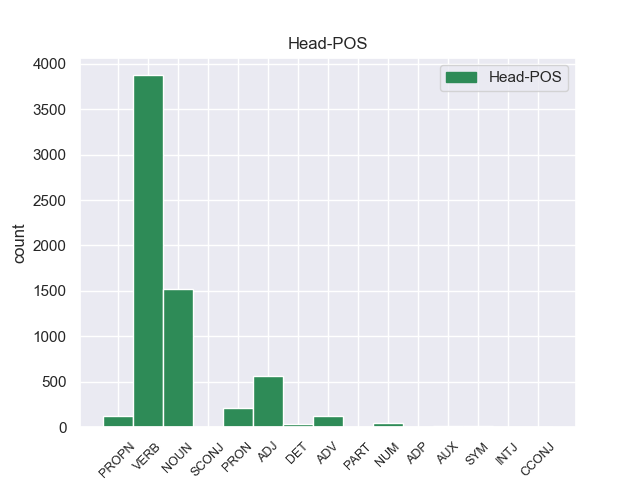
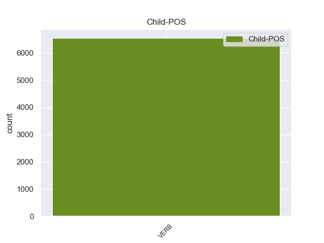

Distribution of features within this leaf



Morphosyntax Rules sorted by frequency.
- When the dependent token is the conjunct(conj) of the head token, and the dependent token is VERB, the Tense needs to be Past.
1 A _ _ _ _ 0 _ _ _
2 few _ _ _ _ 0 _ _ _
3 minutes _ _ _ _ 0 _ _ _
4 after _ _ _ _ 0 _ _ _
5 I _ _ _ _ 0 _ _ _
6 left _ _ _ _ 0 _ _ _
7 , _ _ _ _ 0 _ _ _
8 I _ _ _ _ 0 _ _ _
9 was _ _ _ _ 0 _ _ _
10 called call VERB VBN Tense=Past|VerbForm=Part|Voice=Pass 0 _ _ _
11 and _ _ _ _ 0 _ _ _
12 informed inform VERB VBN Tense=Past|VerbForm=Part 10 conj 10:conj:and _
13 that _ _ _ _ 0 _ _ _
14 " _ _ _ _ 0 _ _ _
15 I _ _ _ _ 0 _ _ _
16 " _ _ _ _ 0 _ _ _
17 left _ _ _ _ 0 _ _ _
18 my _ _ _ _ 0 _ _ _
19 wheel _ _ _ _ 0 _ _ _
20 lock _ _ _ _ 0 _ _ _
21 ( _ _ _ _ 0 _ _ _
22 which _ _ _ _ 0 _ _ _
23 they _ _ _ _ 0 _ _ _
24 should _ _ _ _ 0 _ _ _
25 have _ _ _ _ 0 _ _ _
26 left _ _ _ _ 0 _ _ _
27 in _ _ _ _ 0 _ _ _
28 the _ _ _ _ 0 _ _ _
29 car _ _ _ _ 0 _ _ _
30 ) _ _ _ _ 0 _ _ _
31 . _ _ _ _ 0 _ _ _
1 I _ _ _ _ 0 _ _ _
2 will _ _ _ _ 0 _ _ _
3 never _ _ _ _ 0 _ _ _
4 return _ _ _ _ 0 _ _ _
5 there _ _ _ _ 0 _ _ _
6 again _ _ _ _ 0 _ _ _
7 ( _ _ _ _ 0 _ _ _
8 and _ _ _ _ 0 _ _ _
9 now _ _ _ _ 0 _ _ _
10 have _ _ _ _ 0 _ _ _
11 some _ _ _ _ 0 _ _ _
12 serious _ _ _ _ 0 _ _ _
13 doubts _ _ _ _ 0 _ _ _
14 about _ _ _ _ 0 _ _ _
15 the _ _ _ _ 0 _ _ _
16 quality _ _ _ _ 0 _ _ _
17 of _ _ _ _ 0 _ _ _
18 work work NOUN NN Number=Sing 0 _ _ _
19 they _ _ _ _ 0 _ _ _
20 actually _ _ _ _ 0 _ _ _
21 performed perform VERB VBD Mood=Ind|Tense=Past|VerbForm=Fin 18 acl:relcl 18:acl:relcl _
22 on _ _ _ _ 0 _ _ _
23 my _ _ _ _ 0 _ _ _
24 car _ _ _ _ 0 _ _ _
25 ) _ _ _ _ 0 _ _ _
26 . _ _ _ _ 0 _ _ _
1 A _ _ _ _ 0 _ _ _
2 few _ _ _ _ 0 _ _ _
3 minutes _ _ _ _ 0 _ _ _
4 after _ _ _ _ 0 _ _ _
5 I _ _ _ _ 0 _ _ _
6 left leave VERB VBD Mood=Ind|Tense=Past|VerbForm=Fin 10 advcl 10:advcl:after SpaceAfter=No
7 , _ _ _ _ 0 _ _ _
8 I _ _ _ _ 0 _ _ _
9 was _ _ _ _ 0 _ _ _
10 called call VERB VBN Tense=Past|VerbForm=Part|Voice=Pass 0 _ _ _
11 and _ _ _ _ 0 _ _ _
12 informed _ _ _ _ 0 _ _ _
13 that _ _ _ _ 0 _ _ _
14 " _ _ _ _ 0 _ _ _
15 I _ _ _ _ 0 _ _ _
16 " _ _ _ _ 0 _ _ _
17 left _ _ _ _ 0 _ _ _
18 my _ _ _ _ 0 _ _ _
19 wheel _ _ _ _ 0 _ _ _
20 lock _ _ _ _ 0 _ _ _
21 ( _ _ _ _ 0 _ _ _
22 which _ _ _ _ 0 _ _ _
23 they _ _ _ _ 0 _ _ _
24 should _ _ _ _ 0 _ _ _
25 have _ _ _ _ 0 _ _ _
26 left _ _ _ _ 0 _ _ _
27 in _ _ _ _ 0 _ _ _
28 the _ _ _ _ 0 _ _ _
29 car _ _ _ _ 0 _ _ _
30 ) _ _ _ _ 0 _ _ _
31 . _ _ _ _ 0 _ _ _
1 A _ _ _ _ 0 _ _ _
2 few _ _ _ _ 0 _ _ _
3 minutes _ _ _ _ 0 _ _ _
4 after _ _ _ _ 0 _ _ _
5 I _ _ _ _ 0 _ _ _
6 left _ _ _ _ 0 _ _ _
7 , _ _ _ _ 0 _ _ _
8 I _ _ _ _ 0 _ _ _
9 was _ _ _ _ 0 _ _ _
10 called _ _ _ _ 0 _ _ _
11 and _ _ _ _ 0 _ _ _
12 informed inform VERB VBN Tense=Past|VerbForm=Part 0 _ _ _
13 that _ _ _ _ 0 _ _ _
14 " _ _ _ _ 0 _ _ _
15 I _ _ _ _ 0 _ _ _
16 " _ _ _ _ 0 _ _ _
17 left leave VERB VBD Mood=Ind|Tense=Past|VerbForm=Fin 12 ccomp 12:ccomp _
18 my _ _ _ _ 0 _ _ _
19 wheel _ _ _ _ 0 _ _ _
20 lock _ _ _ _ 0 _ _ _
21 ( _ _ _ _ 0 _ _ _
22 which _ _ _ _ 0 _ _ _
23 they _ _ _ _ 0 _ _ _
24 should _ _ _ _ 0 _ _ _
25 have _ _ _ _ 0 _ _ _
26 left _ _ _ _ 0 _ _ _
27 in _ _ _ _ 0 _ _ _
28 the _ _ _ _ 0 _ _ _
29 car _ _ _ _ 0 _ _ _
30 ) _ _ _ _ 0 _ _ _
31 . _ _ _ _ 0 _ _ _
1 They _ _ _ _ 0 _ _ _
2 promised promise VERB VBD Mood=Ind|Tense=Past|VerbForm=Fin 0 _ _ _
3 it _ _ _ _ 0 _ _ _
4 'd _ _ _ _ 0 _ _ _
5 be _ _ _ _ 0 _ _ _
6 done _ _ _ _ 0 _ _ _
7 within _ _ _ _ 0 _ _ _
8 an _ _ _ _ 0 _ _ _
9 hour _ _ _ _ 0 _ _ _
10 , _ _ _ _ 0 _ _ _
11 so _ _ _ _ 0 _ _ _
12 I _ _ _ _ 0 _ _ _
13 waited wait VERB VBD Mood=Ind|Tense=Past|VerbForm=Fin 2 parataxis 2:parataxis _
14 in _ _ _ _ 0 _ _ _
15 the _ _ _ _ 0 _ _ _
16 lobby _ _ _ _ 0 _ _ _
17 . _ _ _ _ 0 _ _ _
1 I _ _ _ _ 0 _ _ _
2 would _ _ _ _ 0 _ _ _
3 suggest _ _ _ _ 0 _ _ _
4 not _ _ _ _ 0 _ _ _
5 avoiding _ _ _ _ 0 _ _ _
6 Second _ _ _ _ 0 _ _ _
7 Home _ _ _ _ 0 _ _ _
8 based base VERB VBN Tense=Past|VerbForm=Part 15 case 15:case _
9 on _ _ _ _ 0 _ _ _
10 the _ _ _ _ 0 _ _ _
11 ' _ _ _ _ 0 _ _ _
12 bad _ _ _ _ 0 _ _ _
13 experience _ _ _ _ 0 _ _ _
14 ' _ _ _ _ 0 _ _ _
15 review review NOUN NN Number=Sing 0 _ _ _
16 . _ _ _ _ 0 _ _ _
1 Even _ _ _ _ 0 _ _ _
2 my _ _ _ _ 0 _ _ _
3 PA _ _ _ _ 0 _ _ _
4 i _ _ _ _ 0 _ _ _
5 went _ _ _ _ 0 _ _ _
6 to _ _ _ _ 0 _ _ _
7 the _ _ _ _ 0 _ _ _
8 other _ _ _ _ 0 _ _ _
9 day _ _ _ _ 0 _ _ _
10 said _ _ _ _ 0 _ _ _
11 " _ _ _ _ 0 _ _ _
12 it _ _ _ _ 0 _ _ _
13 must _ _ _ _ 0 _ _ _
14 by by VERB VB VerbForm=Inf 0 _ _ _
15 comforting _ _ _ _ 0 _ _ _
16 to _ _ _ _ 0 _ _ _
17 have _ _ _ _ 0 _ _ _
18 gone go VERB VBN Tense=Past|VerbForm=Part 14 csubj 14:csubj _
19 to _ _ _ _ 0 _ _ _
20 a _ _ _ _ 0 _ _ _
21 heart _ _ _ _ 0 _ _ _
22 surgeon _ _ _ _ 0 _ _ _
23 like _ _ _ _ 0 _ _ _
24 him _ _ _ _ 0 _ _ _
25 who _ _ _ _ 0 _ _ _
26 will _ _ _ _ 0 _ _ _
27 do _ _ _ _ 0 _ _ _
28 nothing _ _ _ _ 0 _ _ _
29 for _ _ _ _ 0 _ _ _
30 you _ _ _ _ 0 _ _ _
31 " _ _ _ _ 0 _ _ _
32 . _ _ _ _ 0 _ _ _
1 PS ps NOUN NN Number=Sing 0 _ _ _
2 ) _ _ _ _ 0 _ _ _
3 When _ _ _ _ 0 _ _ _
4 we _ _ _ _ 0 _ _ _
5 called _ _ _ _ 0 _ _ _
6 for _ _ _ _ 0 _ _ _
7 a _ _ _ _ 0 _ _ _
8 reservation _ _ _ _ 0 _ _ _
9 , _ _ _ _ 0 _ _ _
10 we _ _ _ _ 0 _ _ _
11 were _ _ _ _ 0 _ _ _
12 told tell VERB VBN Tense=Past|VerbForm=Part|Voice=Pass 1 appos 1:appos _
13 that _ _ _ _ 0 _ _ _
14 5:00 _ _ _ _ 0 _ _ _
15 and _ _ _ _ 0 _ _ _
16 9:30 _ _ _ _ 0 _ _ _
17 were _ _ _ _ 0 _ _ _
18 their _ _ _ _ 0 _ _ _
19 only _ _ _ _ 0 _ _ _
20 openings _ _ _ _ 0 _ _ _
21 . _ _ _ _ 0 _ _ _
1 Crickets _ _ _ _ 0 _ _ _
2 , _ _ _ _ 0 _ _ _
3 silk _ _ _ _ 0 _ _ _
4 worms _ _ _ _ 0 _ _ _
5 , _ _ _ _ 0 _ _ _
6 phoenix _ _ _ _ 0 _ _ _
7 worms _ _ _ _ 0 _ _ _
8 , _ _ _ _ 0 _ _ _
9 and _ _ _ _ 0 _ _ _
10 various _ _ _ _ 0 _ _ _
11 feeder _ _ _ _ 0 _ _ _
12 roaches _ _ _ _ 0 _ _ _
13 , _ _ _ _ 0 _ _ _
14 like _ _ _ _ 0 _ _ _
15 red _ _ _ _ 0 _ _ _
16 - _ _ _ _ 0 _ _ _
17 lobster _ _ _ _ 0 _ _ _
18 , _ _ _ _ 0 _ _ _
19 turkistan _ _ _ _ 0 _ _ _
20 , _ _ _ _ 0 _ _ _
21 and _ _ _ _ 0 _ _ _
22 dubia _ _ _ _ 0 _ _ _
23 , _ _ _ _ 0 _ _ _
24 are _ _ _ _ 0 _ _ _
25 good _ _ _ _ 0 _ _ _
26 example _ _ _ _ 0 _ _ _
27 of _ _ _ _ 0 _ _ _
28 staple _ _ _ _ 0 _ _ _
29 insects _ _ _ _ 0 _ _ _
30 to _ _ _ _ 0 _ _ _
31 offer offer VERB VB VerbForm=Inf 0 _ _ _
32 your _ _ _ _ 0 _ _ _
33 bearded beard VERB VBN Tense=Past|VerbForm=Part 31 obj 31:obj SpaceAfter=No
34 . _ _ _ _ 0 _ _ _
1 It _ _ _ _ 0 _ _ _
2 was _ _ _ _ 0 _ _ _
3 no _ _ _ _ 0 _ _ _
4 problem _ _ _ _ 0 _ _ _
5 to _ _ _ _ 0 _ _ _
6 get _ _ _ _ 0 _ _ _
7 PROVIDED provide VERB VBN Tense=Past|VerbForm=Part 11 mark 11:mark _
8 the _ _ _ _ 0 _ _ _
9 birth _ _ _ _ 0 _ _ _
10 was _ _ _ _ 0 _ _ _
11 registered register VERB VBN Tense=Past|VerbForm=Part|Voice=Pass 0 _ _ _
12 in _ _ _ _ 0 _ _ _
13 the _ _ _ _ 0 _ _ _
14 first _ _ _ _ 0 _ _ _
15 place _ _ _ _ 0 _ _ _
16 . _ _ _ _ 0 _ _ _
1 The _ _ _ _ 0 _ _ _
2 other _ _ _ _ 0 _ _ _
3 rolls _ _ _ _ 0 _ _ _
4 were _ _ _ _ 0 _ _ _
5 n't _ _ _ _ 0 _ _ _
6 at _ _ _ _ 0 _ _ _
7 all _ _ _ _ 0 _ _ _
8 special special ADJ JJ Degree=Pos 0 _ _ _
9 , _ _ _ _ 0 _ _ _
10 especially _ _ _ _ 0 _ _ _
11 given give VERB VBN Tense=Past|VerbForm=Part 8 obl 8:obl _
12 their _ _ _ _ 0 _ _ _
13 pricing _ _ _ _ 0 _ _ _
14 . _ _ _ _ 0 _ _ _
1 Please _ _ _ _ 0 _ _ _
2 use _ _ _ _ 0 _ _ _
3 this _ _ _ _ 0 _ _ _
4 new _ _ _ _ 0 _ _ _
5 file _ _ _ _ 0 _ _ _
6 as as ADP IN _ 0 _ _ _
7 opposed oppose VERB VBN Tense=Past|VerbForm=Part 6 fixed 6:fixed _
8 to _ _ _ _ 0 _ _ _
9 the _ _ _ _ 0 _ _ _
10 one _ _ _ _ 0 _ _ _
11 I _ _ _ _ 0 _ _ _
12 sent _ _ _ _ 0 _ _ _
13 earlier _ _ _ _ 0 _ _ _
14 . _ _ _ _ 0 _ _ _
1 I _ _ _ _ 0 _ _ _
2 gave _ _ _ _ 0 _ _ _
3 the _ _ _ _ 0 _ _ _
4 woman _ _ _ _ 0 _ _ _
5 I _ _ _ _ 0 _ _ _
6 spoke _ _ _ _ 0 _ _ _
7 with _ _ _ _ 0 _ _ _
8 today _ _ _ _ 0 _ _ _
9 a _ _ _ _ 0 _ _ _
10 " _ _ _ _ 0 _ _ _
11 You _ _ _ _ 0 _ _ _
12 've _ _ _ _ 0 _ _ _
13 been _ _ _ _ 0 _ _ _
14 yelped yelp VERB VBN Tense=Past|VerbForm=Part|Voice=Pass 17 compound 17:compound SpaceAfter=No
15 ! _ _ _ _ 0 _ _ _
16 " _ _ _ _ 0 _ _ _
17 card card NOUN NN Number=Sing 0 _ _ _
18 to _ _ _ _ 0 _ _ _
19 let _ _ _ _ 0 _ _ _
20 her _ _ _ _ 0 _ _ _
21 know _ _ _ _ 0 _ _ _
22 that _ _ _ _ 0 _ _ _
23 Yelp _ _ _ _ 0 _ _ _
24 may _ _ _ _ 0 _ _ _
25 be _ _ _ _ 0 _ _ _
26 a _ _ _ _ 0 _ _ _
27 good _ _ _ _ 0 _ _ _
28 tool _ _ _ _ 0 _ _ _
29 for _ _ _ _ 0 _ _ _
30 helping _ _ _ _ 0 _ _ _
31 spreading _ _ _ _ 0 _ _ _
32 the _ _ _ _ 0 _ _ _
33 word _ _ _ _ 0 _ _ _
34 about _ _ _ _ 0 _ _ _
35 Papeluna _ _ _ _ 0 _ _ _
36 . _ _ _ _ 0 _ _ _
1 He _ _ _ _ 0 _ _ _
2 tried _ _ _ _ 0 _ _ _
3 to _ _ _ _ 0 _ _ _
4 tell _ _ _ _ 0 _ _ _
5 me _ _ _ _ 0 _ _ _
6 it _ _ _ _ 0 _ _ _
7 was _ _ _ _ 0 _ _ _
8 when _ _ _ _ 0 _ _ _
9 I _ _ _ _ 0 _ _ _
10 told tell VERB VBD Mood=Ind|Tense=Past|VerbForm=Fin 11 reparandum 11:reparandum _
11 asked ask VERB VBD Mood=Ind|Tense=Past|VerbForm=Fin 0 _ _ _
12 him _ _ _ _ 0 _ _ _
13 if _ _ _ _ 0 _ _ _
14 he _ _ _ _ 0 _ _ _
15 knew _ _ _ _ 0 _ _ _
16 what _ _ _ _ 0 _ _ _
17 fps _ _ _ _ 0 _ _ _
18 stood _ _ _ _ 0 _ _ _
19 for _ _ _ _ 0 _ _ _
20 and _ _ _ _ 0 _ _ _
21 he _ _ _ _ 0 _ _ _
22 had _ _ _ _ 0 _ _ _
23 no _ _ _ _ 0 _ _ _
24 clue _ _ _ _ 0 _ _ _
25 . _ _ _ _ 0 _ _ _
1 What _ _ _ _ 0 _ _ _
2 followed follow VERB VBD Mood=Ind|Tense=Past|VerbForm=Fin 7 csubj:pass 7:csubj:pass _
3 the _ _ _ _ 0 _ _ _
4 next _ _ _ _ 0 _ _ _
5 day _ _ _ _ 0 _ _ _
6 is _ _ _ _ 0 _ _ _
7 considered consider VERB VBN Tense=Past|VerbForm=Part|Voice=Pass 0 _ _ _
8 by _ _ _ _ 0 _ _ _
9 the _ _ _ _ 0 _ _ _
10 governor _ _ _ _ 0 _ _ _
11 and _ _ _ _ 0 _ _ _
12 Dunn _ _ _ _ 0 _ _ _
13 to _ _ _ _ 0 _ _ _
14 be _ _ _ _ 0 _ _ _
15 the _ _ _ _ 0 _ _ _
16 pivotal _ _ _ _ 0 _ _ _
17 moment _ _ _ _ 0 _ _ _
18 of _ _ _ _ 0 _ _ _
19 the _ _ _ _ 0 _ _ _
20 energy _ _ _ _ 0 _ _ _
21 crisis _ _ _ _ 0 _ _ _
22 . _ _ _ _ 0 _ _ _
1 The _ _ _ _ 0 _ _ _
2 warm _ _ _ _ 0 _ _ _
3 chocolate _ _ _ _ 0 _ _ _
4 cake _ _ _ _ 0 _ _ _
5 was be VERB VBD Mood=Ind|Number=Sing|Person=3|Tense=Past|VerbForm=Fin 7 aux:pass 7:aux:pass _
6 very _ _ _ _ 0 _ _ _
7 tasty tasty ADJ JJ Degree=Pos 0 _ _ _
8 , _ _ _ _ 0 _ _ _
9 but _ _ _ _ 0 _ _ _
10 served _ _ _ _ 0 _ _ _
11 at _ _ _ _ 0 _ _ _
12 room _ _ _ _ 0 _ _ _
13 temperature _ _ _ _ 0 _ _ _
14 , _ _ _ _ 0 _ _ _
15 not _ _ _ _ 0 _ _ _
16 warm _ _ _ _ 0 _ _ _
17 by _ _ _ _ 0 _ _ _
18 any _ _ _ _ 0 _ _ _
19 stretch _ _ _ _ 0 _ _ _
20 of _ _ _ _ 0 _ _ _
21 the _ _ _ _ 0 _ _ _
22 imagination _ _ _ _ 0 _ _ _
23 . _ _ _ _ 0 _ _ _
1 ~ _ _ _ _ 0 _ _ _
2 It _ _ _ _ 0 _ _ _
3 took _ _ _ _ 0 _ _ _
4 over _ _ _ _ 0 _ _ _
5 40 _ _ _ _ 0 _ _ _
6 mins _ _ _ _ 0 _ _ _
7 to _ _ _ _ 0 _ _ _
8 be _ _ _ _ 0 _ _ _
9 taken _ _ _ _ 0 _ _ _
10 to _ _ _ _ 0 _ _ _
11 our _ _ _ _ 0 _ _ _
12 table _ _ _ _ 0 _ _ _
13 , _ _ _ _ 0 _ _ _
14 once _ _ _ _ 0 _ _ _
15 there _ _ _ _ 0 _ _ _
16 it _ _ _ _ 0 _ _ _
17 took _ _ _ _ 0 _ _ _
18 another _ _ _ _ 0 _ _ _
19 20 _ _ _ _ 0 _ _ _
20 mins _ _ _ _ 0 _ _ _
21 to _ _ _ _ 0 _ _ _
22 get _ _ _ _ 0 _ _ _
23 our _ _ _ _ 0 _ _ _
24 orders _ _ _ _ 0 _ _ _
25 and _ _ _ _ 0 _ _ _
25.1 took _ _ _ _ 0 _ _ _
26 a _ _ _ _ 0 _ _ _
27 further _ _ _ _ 0 _ _ _
28 45 _ _ _ _ 0 _ _ _
When the dependent token is the auxiliary(aux) of the head token, and the dependent token is VERB, the Tense needs to be Past.
1 I _ _ _ _ 0 _ _ _
2 got get VERB VBD Mood=Ind|Tense=Past|VerbForm=Fin 4 aux 4:aux _
3 so _ _ _ _ 0 _ _ _
4 excited excited ADJ JJ Degree=Pos 0 _ _ _
5 !!!! _ _ _ _ 0 _ _ _
When the dependent token is the nominal subject(nsubj) of the head token, and the dependent token is VERB, the Tense needs to be Past.
1 A _ _ _ _ 0 _ _ _
2 few _ _ _ _ 0 _ _ _
3 hundred hundr VERB VBN Tense=Past|VerbForm=Part 10 nsubj 10:nsubj _
4 out _ _ _ _ 0 _ _ _
5 of _ _ _ _ 0 _ _ _
6 pocket _ _ _ _ 0 _ _ _
7 now _ _ _ _ 0 _ _ _
8 will _ _ _ _ 0 _ _ _
9 possibly _ _ _ _ 0 _ _ _
10 save save VERB VB VerbForm=Inf 0 _ _ _
11 you _ _ _ _ 0 _ _ _
12 thousands _ _ _ _ 0 _ _ _
13 once _ _ _ _ 0 _ _ _
14 the _ _ _ _ 0 _ _ _
15 horse _ _ _ _ 0 _ _ _
16 is _ _ _ _ 0 _ _ _
17 in _ _ _ _ 0 _ _ _
18 your _ _ _ _ 0 _ _ _
19 name _ _ _ _ 0 _ _ _
20 . _ _ _ _ 0 _ _ _
When the dependent token is the adverbial modifier(advmod) of the head token, and the dependent token is VERB, the Tense needs to be Past.
1 Mrs. _ _ _ _ 0 _ _ _
2 Arafat _ _ _ _ 0 _ _ _
3 , _ _ _ _ 0 _ _ _
4 who _ _ _ _ 0 _ _ _
5 lives _ _ _ _ 0 _ _ _
6 in _ _ _ _ 0 _ _ _
7 Paris _ _ _ _ 0 _ _ _
8 with _ _ _ _ 0 _ _ _
9 her _ _ _ _ 0 _ _ _
10 daughter _ _ _ _ 0 _ _ _
11 , _ _ _ _ 0 _ _ _
12 receives _ _ _ _ 0 _ _ _
13 tens _ _ _ _ 0 _ _ _
14 of _ _ _ _ 0 _ _ _
15 thousands _ _ _ _ 0 _ _ _
16 of _ _ _ _ 0 _ _ _
17 dollars _ _ _ _ 0 _ _ _
18 per _ _ _ _ 0 _ _ _
19 month _ _ _ _ 0 _ _ _
20 from _ _ _ _ 0 _ _ _
21 the _ _ _ _ 0 _ _ _
22 allegedly allegedly VERB VBN Tense=Past|VerbForm=Part 23 advmod 23:advmod _
23 bankrupt bankrupt ADJ JJ Degree=Pos 0 _ _ _
24 Palestinian _ _ _ _ 0 _ _ _
25 Authority _ _ _ _ 0 _ _ _
26 , _ _ _ _ 0 _ _ _
27 while _ _ _ _ 0 _ _ _
28 a _ _ _ _ 0 _ _ _
29 typical _ _ _ _ 0 _ _ _
30 local _ _ _ _ 0 _ _ _
31 ringleader _ _ _ _ 0 _ _ _
32 of _ _ _ _ 0 _ _ _
33 the _ _ _ _ 0 _ _ _
34 Al _ _ _ _ 0 _ _ _
35 - _ _ _ _ 0 _ _ _
36 Aksa _ _ _ _ 0 _ _ _
37 brigade _ _ _ _ 0 _ _ _
38 , _ _ _ _ 0 _ _ _
39 reporting _ _ _ _ 0 _ _ _
40 to _ _ _ _ 0 _ _ _
41 Arafat _ _ _ _ 0 _ _ _
42 , _ _ _ _ 0 _ _ _
43 receives _ _ _ _ 0 _ _ _
44 only _ _ _ _ 0 _ _ _
45 a _ _ _ _ 0 _ _ _
46 cash _ _ _ _ 0 _ _ _
47 payment _ _ _ _ 0 _ _ _
48 of _ _ _ _ 0 _ _ _
49 a _ _ _ _ 0 _ _ _
50 couple _ _ _ _ 0 _ _ _
51 of _ _ _ _ 0 _ _ _
52 hundred _ _ _ _ 0 _ _ _
53 dollars _ _ _ _ 0 _ _ _
54 , _ _ _ _ 0 _ _ _
55 for _ _ _ _ 0 _ _ _
56 performing _ _ _ _ 0 _ _ _
57 murders _ _ _ _ 0 _ _ _
58 at _ _ _ _ 0 _ _ _
59 the _ _ _ _ 0 _ _ _
60 retail _ _ _ _ 0 _ _ _
61 level _ _ _ _ 0 _ _ _
62 . _ _ _ _ 0 _ _ _
non-conforming Examples:
1 You _ _ _ _ 0 _ _ _
2 wonder wonder VERB VBP Mood=Ind|Tense=Pres|VerbForm=Fin 0 _ _ _
3 if _ _ _ _ 0 _ _ _
4 he _ _ _ _ 0 _ _ _
5 was _ _ _ _ 0 _ _ _
6 manipulating manipulate VERB VBG Tense=Pres|VerbForm=Part 2 ccomp 2:ccomp _
7 the _ _ _ _ 0 _ _ _
8 market _ _ _ _ 0 _ _ _
9 with _ _ _ _ 0 _ _ _
10 his _ _ _ _ 0 _ _ _
11 bombing _ _ _ _ 0 _ _ _
12 targets _ _ _ _ 0 _ _ _
13 . _ _ _ _ 0 _ _ _
1 It _ _ _ _ 0 _ _ _
2 reminds _ _ _ _ 0 _ _ _
3 me _ _ _ _ 0 _ _ _
4 too _ _ _ _ 0 _ _ _
5 much _ _ _ _ 0 _ _ _
6 of _ _ _ _ 0 _ _ _
7 the _ _ _ _ 0 _ _ _
8 ARVN _ _ _ _ 0 _ _ _
9 officers officer NOUN NNS Number=Plur 0 _ _ _
10 who _ _ _ _ 0 _ _ _
11 were _ _ _ _ 0 _ _ _
12 secretly _ _ _ _ 0 _ _ _
13 working work VERB VBG Tense=Pres|VerbForm=Part 9 acl:relcl 9:acl:relcl _
14 for _ _ _ _ 0 _ _ _
15 the _ _ _ _ 0 _ _ _
16 other _ _ _ _ 0 _ _ _
17 side _ _ _ _ 0 _ _ _
18 in _ _ _ _ 0 _ _ _
19 Vietnam _ _ _ _ 0 _ _ _
20 . _ _ _ _ 0 _ _ _
1 ( _ _ _ _ 0 _ _ _
2 Kut _ _ _ _ 0 _ _ _
3 is _ _ _ _ 0 _ _ _
4 in _ _ _ _ 0 _ _ _
5 southeastern _ _ _ _ 0 _ _ _
6 Iraq Iraq PROPN NNP Number=Sing 0 _ _ _
7 and _ _ _ _ 0 _ _ _
8 has have VERB VBZ Mood=Ind|Number=Sing|Person=3|Tense=Pres|VerbForm=Fin 6 conj 6:conj:and _
9 an _ _ _ _ 0 _ _ _
10 overwhelmingly _ _ _ _ 0 _ _ _
11 Shiite _ _ _ _ 0 _ _ _
12 population _ _ _ _ 0 _ _ _
13 , _ _ _ _ 0 _ _ _
14 who _ _ _ _ 0 _ _ _
15 are _ _ _ _ 0 _ _ _
16 on _ _ _ _ 0 _ _ _
17 the _ _ _ _ 0 _ _ _
18 lookout _ _ _ _ 0 _ _ _
19 for _ _ _ _ 0 _ _ _
20 Baathist _ _ _ _ 0 _ _ _
21 saboteurs _ _ _ _ 0 _ _ _
22 and _ _ _ _ 0 _ _ _
23 willingly _ _ _ _ 0 _ _ _
24 turn _ _ _ _ 0 _ _ _
25 them _ _ _ _ 0 _ _ _
26 in _ _ _ _ 0 _ _ _
27 . _ _ _ _ 0 _ _ _
1 ( _ _ _ _ 0 _ _ _
2 Kut _ _ _ _ 0 _ _ _
3 is _ _ _ _ 0 _ _ _
4 in _ _ _ _ 0 _ _ _
5 southeastern _ _ _ _ 0 _ _ _
6 Iraq _ _ _ _ 0 _ _ _
7 and _ _ _ _ 0 _ _ _
8 has _ _ _ _ 0 _ _ _
9 an _ _ _ _ 0 _ _ _
10 overwhelmingly _ _ _ _ 0 _ _ _
11 Shiite _ _ _ _ 0 _ _ _
12 population _ _ _ _ 0 _ _ _
13 , _ _ _ _ 0 _ _ _
14 who _ _ _ _ 0 _ _ _
15 are _ _ _ _ 0 _ _ _
16 on _ _ _ _ 0 _ _ _
17 the _ _ _ _ 0 _ _ _
18 lookout lookout NOUN NN Number=Sing 0 _ _ _
19 for _ _ _ _ 0 _ _ _
20 Baathist _ _ _ _ 0 _ _ _
21 saboteurs _ _ _ _ 0 _ _ _
22 and _ _ _ _ 0 _ _ _
23 willingly _ _ _ _ 0 _ _ _
24 turn turn VERB VBP Mood=Ind|Tense=Pres|VerbForm=Fin 18 conj 12:acl:relcl|18:conj:and _
25 them _ _ _ _ 0 _ _ _
26 in _ _ _ _ 0 _ _ _
27 . _ _ _ _ 0 _ _ _
1 Baghdadis _ _ _ _ 0 _ _ _
2 do _ _ _ _ 0 _ _ _
3 n't _ _ _ _ 0 _ _ _
4 venture venture VERB VB VerbForm=Inf 0 _ _ _
5 much _ _ _ _ 0 _ _ _
6 out _ _ _ _ 0 _ _ _
7 of _ _ _ _ 0 _ _ _
8 their _ _ _ _ 0 _ _ _
9 neighbourhoods _ _ _ _ 0 _ _ _
10 any _ _ _ _ 0 _ _ _
11 more _ _ _ _ 0 _ _ _
12 , _ _ _ _ 0 _ _ _
13 you _ _ _ _ 0 _ _ _
14 never _ _ _ _ 0 _ _ _
15 know know VERB VBP Mood=Ind|Tense=Pres|VerbForm=Fin 4 ccomp 4:ccomp _
16 where _ _ _ _ 0 _ _ _
17 you _ _ _ _ 0 _ _ _
18 might _ _ _ _ 0 _ _ _
19 get _ _ _ _ 0 _ _ _
20 stuck _ _ _ _ 0 _ _ _
21 . _ _ _ _ 0 _ _ _